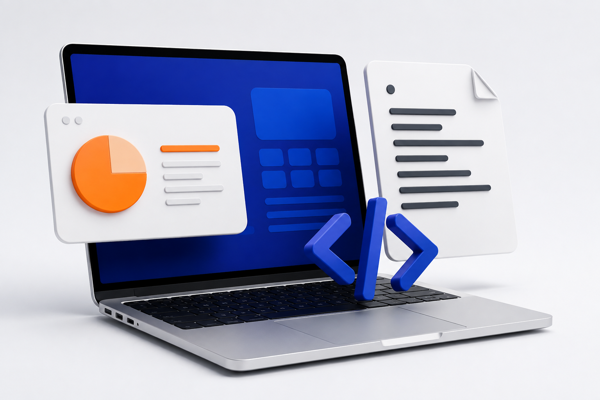

PARTNER KEBUTUHAN DIGITALMU
Ide kamu.
Kita wujudkan.
Dari dokumen dan presentasi sampai website.
Ceritakan kebutuhanmu, biar kami bantu rapikan
dan jadikan nyata.
✓ Harga disepakati di awal✓ Bisa bayar QRIS
A little idea. A great start.

✳ YOUR NEXT PROJECT
STARTS HERE.
TD / DIGITAL STUDIO — 01STARTS HERE.
DOKUMEN✳PRESENTASI✳CODING✳WEBSITE✳IDE JADI NYATA
01 / APA YANG KAMU BUTUHKAN?
Satu tempat.
Banyak yang bisa dibantu.
Pilih layanannya, kirim detailnya.
Harga menyesuaikan kebutuhan proyekmu.
Untuk tugas yang dinilai, bantuan berupa pembahasan, review, dan penyuntingan. Kamu tetap penulis dan penanggung jawab tugasmu.
02 / SEDIKIT GAMBARAN
Begini, misalnya.
Eksplorasi desain untuk menunjukkan arah karya.
Semua di bawah ini adalah contoh, bukan proyek klien.
forma.Studio Work Contact
INDEPENDENT DESIGN STUDIOSpaces for
better living.
Explore the studio ↗
Website dengan karakter
WEB · CONTOH03 / NGGAK PERLU RIBET
Dari cerita, jadi karya.
Kamu selalu tahu langkah berikutnya.
Ceritakan kebutuhan
Pilih layanan, tulis detail, dan tentukan tenggat yang kamu perlukan.
Sepakati penawaran
Kami cek kebutuhanmu, lalu kirim harga, waktu, dan ketentuan revisi.
Bayar dengan QRIS
Setelah penawaran cocok, bayar dan tunggu verifikasi pembayaran.
Terima hasilnya
Pantau pengerjaan, ambil hasil, dan ajukan revisi sesuai kesepakatan.
04 / SEBELUM MULAI
Mungkin kamu
mau tanya ini.
Harganya berapa?+
Harga menyesuaikan jenis pekerjaan, jumlah halaman atau slide, tingkat kesulitan, dan tenggat. Penawaran diberikan setelah detail kebutuhan diperiksa.
Bisa pesan dengan deadline dekat?+
Tuliskan tanggal dan jam yang kamu butuhkan. Kami akan memeriksa kapasitas dan memastikan waktunya sebelum kamu membayar.
Bayarnya pakai apa?+
Rencananya menggunakan QRIS merchant. Dalam pratinjau ini pembayaran belum aktif dan tidak ada dana yang ditagihkan.
Kalau hasilnya perlu direvisi?+
Jumlah dan batas waktu revisi dicantumkan dalam penawaran. Tambahan pekerjaan di luar kebutuhan yang disepakati akan dibahas lebih dulu.
File saya akan dipakai untuk portofolio?+
File pelanggan bersifat pribadi. Penggunaan hasil untuk portofolio membutuhkan izin pelanggan.
ADA IDE DI KEPALA?
Yuk, mulai dari cerita.
Belum tahu detailnya? Tulis dulu yang kamu butuhkan.